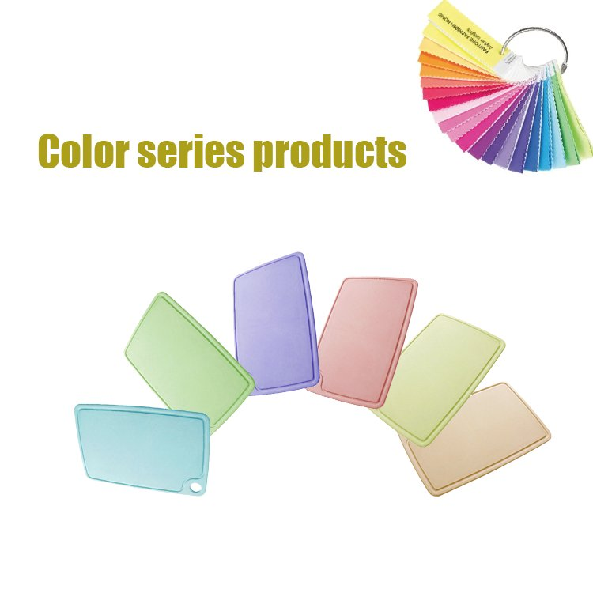
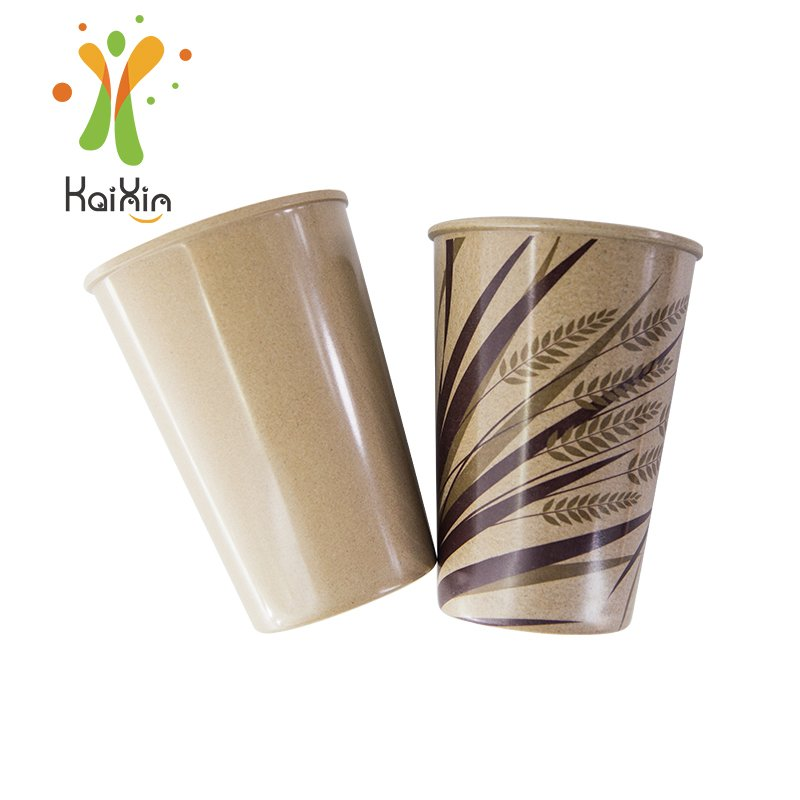

How to Launch a Private-Label Rice Husk Tableware Line: Logo, Colors, MOQ and Lead Times
Every distributor eventually faces the same ceiling: you resell someone else's brand, you compete on price, and the customer's loyalty belongs to the factory's logo, not yours. Private labeling fixes that — your brand on the product, your packaging on the shelf, your margin story in the buyer meeting. Eco tableware is one of the friendliest categories to start with, because the differentiation is built into the material itself. This guide walks through the full journey from "we should have our own line" to goods on the water: choosing SKUs, deciding between a molded and a printed logo, matching brand colors, sampling, tooling, compliance paperwork and a realistic launch calendar.

Custom-matched colorways: one of the fastest ways to make a commodity category look like your brand.
Why Eco Tableware Is a Low-Risk First Private-Label Category
Private label works best when the product has a clear story the buyer can repeat in one sentence. "Plates made from rice husk — an agricultural byproduct — that are reusable, plastic-free and tested for food contact" is that sentence. You don't need to invent a technology or educate the market from zero: consumer awareness of single-use plastic has been doing the marketing for you, and regulation in the EU, UK and parts of North America keeps pushing food service and retail toward reusables. For a distributor, the economics are straightforward — a branded eco line typically carries a healthier margin than reselling a generic import, and once your logo is on the product, competitors can't simply undercut you with an identical listing. The full manufacturing and customization capability is described on our OEM/ODM service page; this article is the practical walkthrough of how a first order actually comes together.
Step 1: Choose a Tight SKU Range, Not a Full Catalog
The most common first-order mistake is trying to launch fifteen SKUs at once. Every extra SKU multiplies your tooling decisions, packaging designs, color approvals and cash tied up in stock. Strong first lines usually pick a hero product plus two or three companions: for example, a chopping board (high perceived value, large canvas for a molded logo), a cup or tumbler (daily use, brand visibility) and a bowl or plate set (completes the story). Our product range covers boards, cups, bowls, plates, trays and kids sets, so a coherent three-to-five SKU line is easy to assemble without touching custom molds. Start with existing body molds and differentiate through logo, color and packaging — custom shapes can come in year two, once your line has sales data.
Step 2: Your Logo — Molded In, or Printed On?
There are two ways to put a logo on rice husk tableware, and the right answer depends on the product and the look you want:
| Option | How it looks | Best for |
|---|---|---|
| Molded (debossed) logo | Your mark pressed into the material itself — tone-on-tone, no ink, can't wear off | Boards, trays, thick-wall products; a natural, understated brand look |
| Screen-printed logo | Food-safe ink on the surface — sharper detail and finer lines | Cups and small items; multi-color logos and detailed artwork |
Both routes are available from our 5,000 m² facility, with a minimum order quantity of 1,000 pieces per item for either molded or printed logos.
A molded logo is the signature rice husk look — the mark is part of the material, it survives years of washing and abuse, and it photographs beautifully for eco-positioned brands. Printing gives you finer detail and color logos on smaller items. Many brands do both: a molded logo on the board line and a printed one on cups. If your artwork is complex, send it as a vector file early — we'll confirm which method will reproduce it cleanly before you commit to a sample round.

Cups and tumblers carry printed logos well — daily-use items keep your brand in hand, not just on the shelf.
Step 3: Brand Colors — Pantone Matching on a Natural Material
Color is where an eco line stops looking generic. We match custom colors from a Pantone reference, and the natural fiber base gives finished pieces a warm, matte depth that plain plastic can't copy. Minimums vary by product because of machine batch sizes — chopping boards can run from around 500 pieces per color, cups and smaller items from around 1,000. Two practical tips: first, keep your launch palette to two or three colors; every additional color is another approval cycle and another stock position. Second, ask for a color sample against your brand guide before mass production — pigment on plant fiber reads slightly softer than the same Pantone on paper or plastic, and approving a physical sample avoids the "it looked different online" conversation later. The color range on our colored chopping board line shows how far you can push a palette while keeping the material's natural character.
Step 4: Samples, Tooling and Realistic Timelines
For logos on existing body molds, the sample round is fast: custom color samples typically take 2–3 weeks from artwork confirmation. If you need a fully custom shape, add a tooling stage — mold costs are quoted per item depending on size and complexity, and tooling time runs in weeks rather than days, which is exactly why we recommend launching on existing shapes. A realistic calendar for a first branded order on existing molds looks like this:
| Phase | Typical duration | What happens |
|---|---|---|
| Inquiry & spec | Week 0–1 | SKU list, logo files, Pantone references, target volumes agreed |
| Pre-production samples | Week 2–4 | Logo + color samples produced and shipped for approval |
| Approval & packaging | Week 4–6 | Sample sign-off, artwork for cartons and inserts finalized |
| Mass production | Week 6–10 | Production, QC and packing |
| Shipping | Week 10+ | Container loading and sailing — see our container loading & MOQ guide |
Indicative timeline for a first order on existing body molds with logo and color customization. Custom shapes add tooling time; re-orders skip the first three phases entirely.
Build in buffer for the sample approval — it's the step buyers most often underestimate, because it involves real decisions (color against the brand guide, logo depth, packaging layout). Approving in one round instead of three is the single biggest schedule saver in a private-label project.
Step 5: Compliance Paperwork — Get It Before You Need It
Nothing stalls a retail launch like a buyer asking for food-contact documentation you don't have. Line up your paperwork during sampling, not after production: our products are SGS tested for food contact, with reports available on request, and we can support LFGB and REACH documentation for European markets along with material safety statements. If your market requires additional verification, we work with buyers to have products tested at a third-party laboratory to their destination-market standards — worth confirming with your retail buyer at the start so the right tests are scoped into the timeline. Our quality and testing page lists the documentation we routinely provide. One more spec detail worth settling at inquiry stage: usage care. Rice husk tableware is made for daily service — hot-pressed for durability and safe for hand washing or a standard dishwasher cycle — but if your end market involves high-volume washing operations, tell us the machine type, wash temperature and detergent at the inquiry stage and we'll confirm the care protocol for the SKUs you're ordering.
What a Good OEM Partner Should Hand You
✅ Per-SKU packing data (carton dimensions, pieces per carton, gross weight) so you can model landed cost
✅ Pre-production samples in your logo and your colors, not a generic catalog photo
✅ Food-contact test reports for the exact SKU and recipe you're buying
✅ Clear MOQs per customization type, in writing, before you commit
✅ A named contact who answers within one business day — OEM projects die in slow email threads
✅ Honest lead times that include QC and packing, not just molding days
Frequently Asked Questions
What is the MOQ for a private-label rice husk order?
For logo customization on our existing product molds — either molded-in or screen-printed — the minimum is 1,000 pieces per item. Custom Pantone colors start from around 500 pieces per color on larger items like chopping boards and from around 1,000 on cups and smaller pieces. If you want a completely new product shape, that's a tooling project quoted per item, and we'll walk through volumes before any mold investment.
How long does the whole process take?
For a first branded order on existing molds: roughly 10 weeks from confirmed artwork to goods ready to ship — about 2–3 weeks for color and logo samples, a couple of weeks for approval and packaging artwork, and production plus QC after that. Custom shapes add tooling time. Repeat orders skip sampling and land much faster, which is why getting the first specification right pays off across the whole life of the line.
Can you match my exact brand color?
We match from Pantone references, and a physical color sample is produced for your approval before mass production. Plant fiber gives pigment a naturally soft, matte finish — most brands find it elevates their palette — but that's exactly why we sample in the real material rather than asking you to judge from a screen. For multi-color brands, we recommend limiting the launch line to your two or three lead colors.
What documents do I need for retail buyers?
At minimum: a food-contact test report for the SKUs you're listing (ours are SGS tested, reports available on request), plus material safety documentation. For European markets we can support LFGB and REACH documentation, and where your buyer requires destination-specific verification we cooperate with third-party laboratory testing scoped to their requirements. Ask your retail buyer for their document checklist during the sampling phase so nothing gets scoped late.
Ready to put your brand on eco tableware?
Send us your logo file, Pantone references and the SKUs you have in mind. We'll reply with MOQs per customization type, sample lead times, our SGS food-contact reports and a per-SKU quotation — from a manufacturer that has run OEM/ODM programs since 2016 and ships to 40+ countries.
Start Your Private-Label InquiryPublished by Kaixin Eco Team · Shenyang Kaixin Technology Co., Ltd. — eco-friendly rice husk (plant fiber) dinnerware manufacturer since 2016, shipping to 40+ countries with full OEM/ODM support. Going deeper: see our OEM/ODM service overview, or start from the Kaixin eco tableware homepage.